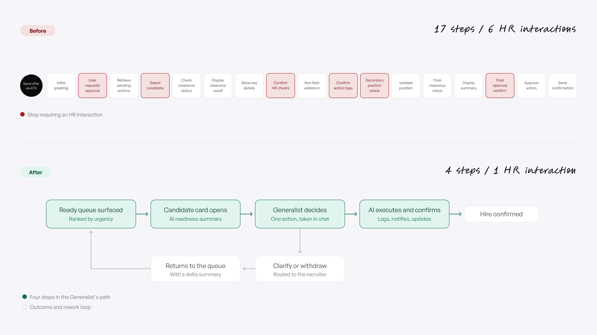
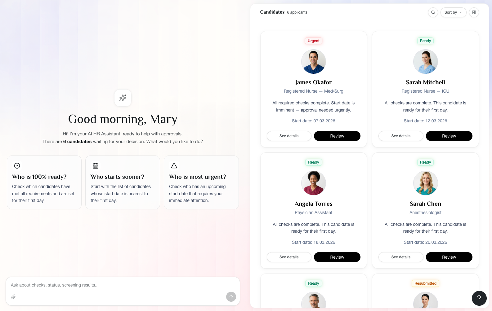

Two weeks to a working answer
AI decision support for clinical hiring approvals, healthcare

- Constraint
- Two weeks, no brief, no access to users, an unfamiliar domain, and an existing conversational tool people had already stopped using.
- Decision
- Split the screen. Conversation and candidate gallery side by side, synced in both directions, rather than chat alone.
- Trade-off
- Keeping the full candidate card permanently available is an admission the assistant might not be enough. It costs width and creates two paths to the same information.
- Role
- Sole designer, with 2 business analysts
- Timeframe
- 2 weeks, from zero
- Context
- Pre-sale. The demo was the pitch for the contract.
- Outcome
- Working AI-assisted approval product. 17 steps and 6 HR interactions reduced to 4 and 1. Presented to the client, positive response.
[ 01 ]The situation
A healthcare organisation in the US told my company one thing: their onboarding approval process was broken. No research, no documentation, no access to their users, no requirements.
This was pre-sale work. My company was trying to win the contract, and the demo was the pitch. If it did not convince them, there was no project.
They were not starting from nothing. They already had a conversational tool in the approval process, one that suggested next actions and listed who needed to approve. It was not working well, and part of discovery was understanding why, so the replacement did not repeat the same mistakes.
I was the only designer on it. I had never worked in healthcare.
[ 02 ]Finding the real problem
Week one went to research, because nobody had defined the problem.
Working with two business analysts, I ran it in three layers: onboarding in general, onboarding in healthcare, and the company's current onboarding. Alongside that I built a picture of the organisation itself, its priorities, its systems landscape, and the vendors already in its ecosystem.
Then we mapped the existing approval workflow: 17 steps and 6 separate HR interactions between a job offer being sent and the hire being confirmed.

The step count was not the real finding. The real finding was that the HR Generalist, who makes the final call, was being handed decisions they had no way to make well. Assembling a readiness picture for one candidate meant working across four things at once: the applicant tracking system, a third-party portal, the health clearance system and an email thread. The three of us ran the research together and identified nine distinct failures. The second week was mine: I worked out which of those failures were design problems, what the interface had to do about them, and made every decision that followed. The ones that shaped the product:
- The queue had no urgency signal. A nurse starting in three days sat next to one starting next month. Generalists worked the list in order, so the most time-sensitive candidates waited longest. That is a structural guarantee, not bad luck.
- "Cleared with conditions" flattened everything into one list. A TB result still pending, which does not stop anyone starting, looked exactly like a blocker that does. The Generalist could not tell who was safe to approve and who had to wait.
- Status existed, timelines did not. Generalists could see what was pending but not when it would be done, so they could not tell whether a candidate would clear before their start date until it was already too late.
- Sources disagreed silently. Candidate data arrived from four separate systems, each on its own update schedule. When two systems held different values, the interface showed one, with no indication that a conflict existed.
- Nothing was logged. When a start date failed, there was no timestamped record of who did what and when. The Generalist absorbed the accountability without holding the context to explain it.
- The existing chat was being abandoned. Reviewing twenty candidates in a morning, Generalists did not have time for a multi-message thread per person. Going straight to the source systems was faster, so they went back to working manually across tabs and used the chat only for things they could not avoid.
- Rework had no memory. A candidate sent back for a fix returned as a fresh review. The Generalist re-read the whole file to work out what had changed, sometimes asking about something already resolved.
The problem I designed against: give the Generalist everything required to decide, at the moment of deciding, and make the exceptions visible instead of buried.
[ 03 ]Decision 1: which side of the workflow gets the AI
I scoped AI opportunities in two directions.
Candidate-facing would mean document extraction and autofill, proactive warnings about wrong file types and expired certificates, guided form completion. Real value, and it improves the quality of what arrives.
Generalist-facing would mean ranking the queue, summarising readiness, flagging anomalies, surfacing what changed since last review.
I went with Generalist-facing. Better candidate submissions improve the inputs, but the delay was not in the inputs. It was at the decision point, where one person had to assemble a picture from four systems before they could act. Fixing submission quality would have made a broken decision faster to feed, not easier to make.
[ 04 ]Decision 2: not a chat, and not a dashboard
The obvious build for a conversational AI brief is a chat window. I did not do that, and this was the decision the whole product hangs on.
A chat-only interface makes the Generalist ask for everything, including things they can already see faster by looking. That was the failure mode of the tool they already had. A traditional queue view has the opposite problem: it makes them do their own filtering across twenty candidates every morning, which is the work they were trying to escape.
So the screen is split. Conversation on the left, the candidate gallery on the right, and the two stay in sync.
Ask "who is most urgent" and the gallery filters in real time to that candidate, with the filter shown as a removable chip. The answer is not just text, it changes what you are looking at. Open a candidate card manually and the conversation follows you: the assistant switches context to that person, and the input shows a visible tag marking who the next question is about.
This mattered because of something I wrote down during research:
If using the AI takes more effort than not using it, it gets abandoned, and that is a design problem, not a training problem.
A chat that made people describe what they wanted instead of pointing at it would have failed that test on day one.
The trade-off I accepted: keeping the full candidate card permanently available is an admission that the assistant might not be enough on its own. That costs screen space and creates two paths to the same information. I took it because this is a hiring decision with compliance exposure, and forcing someone to trust a summary they cannot verify is the wrong failure mode. It also gave me a way to measure the problem.
[ 05 ]Decision 3: people do not know what to ask
The blank input is the failure point of every conversational interface. Someone opens it, cannot think of the right question, and goes back to the old tool.
Three things address that:
- The empty state asks the questions for you. "Who is 100% ready?", "Who starts sooner?", "Who is most urgent?" These are not decoration, they are the three questions a Generalist actually opens the tool to answer.
- Every AI response ends with a follow-up. After showing outstanding items: "Would you like to see the full checklist or contact their recruiter?" The assistant carries the burden of knowing what comes next.
- Quick actions sit above the input for the routine queries: show checks, screening results, start date.

Decisions happen inside the conversation, not in a separate flow: Approve, Request clarification, Withdraw candidate. One action, not a confirmation sequence.
Two things sit behind the interface rather than in it. Every action writes to an audit trail, logging who acted, when, and against which version of the rules, so a failed start date becomes traceable instead of something the Generalist has to absorb. And a candidate returning after a fix opens with a delta summary, three lines covering what changed since last review, each one clickable through to the relevant field, so nobody re-reads a file to find one edit.
The rebuilt flow: 4 steps and 1 HR interaction, from 17 and 6.
[ 06 ]Building it
Design and build ran in week two.
- Gemini Deep Research for the three research layers
- FigJam for flows, the issue analysis, and feature prioritisation
- v0 for the interactive build
I had never used v0 before this project. I learned it during the two weeks, because a static prototype cannot show what a conversational interface feels like.
The output was a working, clickable product. Not screens.
How I would have measured this
The demo never reached production, so these are the metrics I defined, not results I can report.
The trap with an AI feature is measuring engagement. Chat usage going up would have told me nothing. The question was whether decisions got faster and more confident.
- Time to decision, from opening a candidate to acting. The primary number.
- Card-open rate before deciding. The trust signal. If Generalists kept opening the full card before acting, the assistant was not giving them enough on its own. This is exactly what the split screen was designed to let me observe.
- Escalation rate. "Request clarification" and "Contact recruiter" were instrumentation, not menu items. Each use marked a specific information gap, traceable to the candidate that triggered it.
- Candidates processed per Generalist per day, as the north star, because it connects to time-to-hire, which is what leadership actually watches.
[ 07 ]Outcome and limits
My executives presented the demo to the client as the proposed solution. The feedback was positive.
What I did not have: access to real users. No interviews, no usability testing. The research was desk research and domain analysis, and every assumption in the flow stays an assumption until a working Generalist tests it.
What I would do differently: I built the assistant's capabilities from research into what Generalists need. I would now want to hear how they phrase questions unprompted before deciding what it should be able to answer.